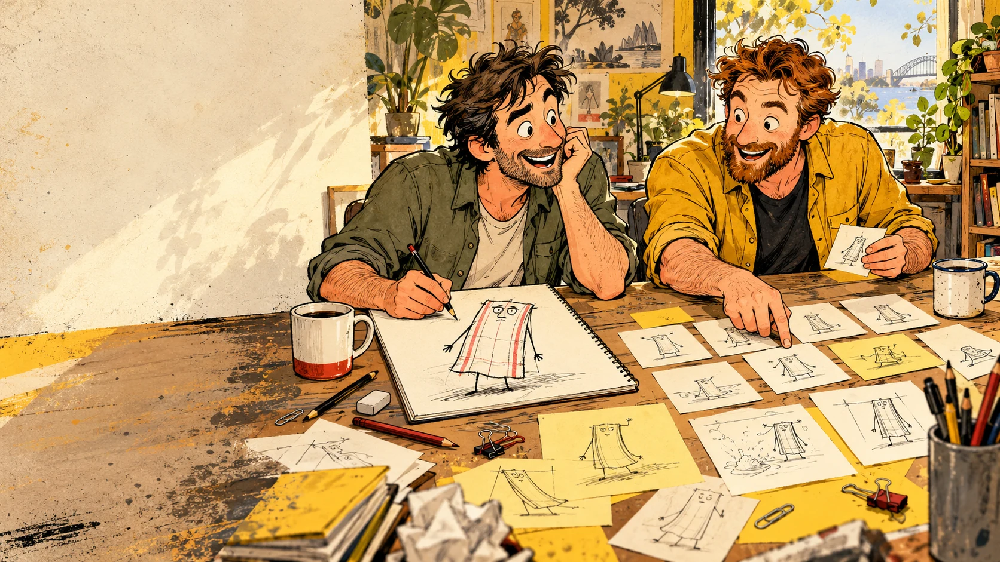

Laugh. Learn. Try it.
Explore a real situation, show a useful change and keep the person’s dignity in the joke.
Keep the laugh. Put the better way in the picture.
Joyful responsible abundance is the direction: more capability, care, wellbeing and shared enjoyment. The story can begin with a familiar rough habit. It needs somewhere worth going after the laugh, with the reader able to recognise and try that change.
Begin with the person and the situation
What is happening, who is affected and what makes the habit difficult to change? A familiar excuse can carry the joke without deciding that somebody is lazy, stupid or destined to fail. Keep observations, memories and assumptions distinct.
- Ask what support, knowledge, resources or work conditions are missing.
- Let the person recognise themselves without having their dignity removed.
- For young people, leave room to learn a different response and ask a trusted person for help.
Give the story somewhere worth going
Name the action the person can try and the benefit it offers them or others. Put that action in the scene. A disgusted bystander or an abandoned brush does not show anyone learning to wash the plate.
- What do they do differently?
- What makes that response possible?
- What improves: health, safety, trust, calm, time or shared enjoyment?
- Does the person take part in the solution?
Try some Loose Goose angles
Luke’s Loose Goose Comedy Engine offers ways to explore a real memory, comic angles and performance timing. Here we adapt those prompts toward a useful change. The target of the joke is the excuse or contradiction; the person gets the chance to learn.
- Keep memory and invention separate. Leave unknown details and other people’s motives open.
- Try an observation, an exchange or a joke on yourself. Which angle invites recognition while leaving room to change?
- Let status change through learning: the person who asks or listens may be the one who gets the job right.
- Use a visual reveal to expose the excuse, then show the better action and its benefit.
- Play with setup, turn, pause and callback. Let the last beat reward care, repair or cooperation rather than a more elaborate bad habit.
Show the turn, the action and the payoff
A sequence can move from recognition to a different choice and then an enjoyable result. In a single image, make the better action the main event and let the caption gently puncture the old excuse. The funniest-looking unsafe moment must not become the page’s recommendation.
- Show the same person learning, asking, repairing or contributing.
- Give the change enough visual space to be understood.
- Keep the payoff ordinary and desirable: a shared meal, a clear route, a restored friendship or a calmer morning.
- Use exact lettering separately from generated artwork.
Check care, accuracy and the actual work
For safety and health topics, identify a suitable source and reviewer. For work material, use the actual task, equipment, controls and conditions. For every page, ask whether the humour rewards improvement or makes the harmful behaviour attractive.
- Can the reader explain the better action without your explanation?
- Is the action feasible for the person and setting?
- Does the picture agree with the source and caption?
- Is someone’s disadvantage, family or social class being used as the joke?
- Could the final beat be read as permission to keep doing the harmful thing?
Try it with people, then listen
Show alternatives to the intended readers. Ask what happened, what the person could try and how the ending felt. Record their actual words and any observed response separately from your hopes for the page. A laugh, a generated score or our own approval does not establish behaviour change.
- Ask what was clear, useful, uncomfortable or forced.
- For work material, ask what gets in the way of doing it safely.
- Revise the joke, the proposed action or the conditions around it.
- Keep the original, source notes and revision together.
Looking for a familiar habit?
Browse the working list for home, school, relationships, work, gardening and emergency preparedness. Bring a bad habit and its useful opposite into the image brief below.
Explore the habit ideasKnock an idea into shape
Start with a familiar habit, then describe a better action and why it helps. The brief keeps the joke connected to that way forward. Your entries stay in this browser until you copy or download them.
Borrow a visual pattern
Photorealistic cover mock-up
An old handmade guidebook on a timber bench. Cover lettering, repair materials and small badges establish the brand.
Photorealistic diagonal close-up of a battered handmade book on a scratched timber workbench. Brown stained cover, thick silver duct-tape spine, protruding handwritten notes, cracked yellow smiley stickers, black ink skull with beanie, spanner and bottle. Natural workshop light and tactile paper. Reserve the cover for separately added exact title and byline. Use the attached reference for materials and viewpoint.
Alternative voice and introduction copy
Three text-only alternatives. These describe possible voices rather than containing three illustrated story pages.
Use the selected introduction only as tone context. Illustrate a single concrete metaphor chosen from that option. State the chosen metaphor and scene explicitly. Do not try to render the whole introductory paragraph inside the picture.
Horizontal teaching panels with a bottom checklist
Portrait yellow title banner, usually three wide horizontal panels, then a checklist with three smaller illustrated examples. Slide 11 has four main teaching panels. Source step numbers are sometimes skipped.
Australian workplace comic poster, portrait [ASPECT RATIO]. Bold black ink, warm cream panels, safety-yellow header, muted dusty worksite colours, limited red warning accents, distressed paper and taped corners. Allocate [N] horizontal scene panels and a bottom strip of [M] smaller scenes. For each panel use its separate approved scene description. Keep clear blank zones for title, step labels, short copy and checklist text. Separate correct actions from incorrect examples through composition and later lettering. Generate no invented signs or operational numbers.
Four-scene landscape humour strip
Landscape page with a shared top title, four vertical scene columns with their own headings and captions, a top-right mock-official badge and a punchline footer.
Landscape Australian comic strip in four equal vertical scenes, [ASPECT RATIO]. Shared worn cream and black-ink illustration style, yellow and ochre accents. Each scene must have a different recognisable action: [SCENE 1], [SCENE 2], [SCENE 3], [SCENE 4]. Consistent character design, clear silhouettes, large facial reactions, concrete local props. Reserve separate lettering areas for the title, each panel heading, captions and footer. Render the visual joke in the artwork. Leave text blank for exact later lettering.
Four-scene grid with a warning strip
Tall portrait composition with two rows of two illustrated teaching scenes and a bottom warning checklist.
Tall portrait comic infographic, four large illustrated scenes in a two-by-two arrangement with a smaller three-scene strip below. Heavy black outlines, bright yellow, warm cream and selective red crosses, simplified backgrounds. Give each scene one main action and the correct equipment for the approved topic. Reserve clean areas for separately typeset headings and captions. Do not merge props or characters between panels.
Landscape safety sequence with a side checklist
Wide poster with a large title, a multi-step acid-spill sequence across the left and middle, and a stacked warning/checklist column at the right.
Wide landscape illustrated safety page using the reference layout: sequential scene panels occupy the left and centre, and a narrow warning-example column occupies the right. Maintain one approved procedure step per scene. Use the approved chemical-specific brief and verified equipment references. Leave all lettering and symbols requiring verification for later placement.
Mock procedure notice
Portrait site-notice parody. A document identifier and location/risk header precede numbered sections, bracketed labels, small diagrams and a bottom checklist/disclaimer.
Portrait mock site notice with worn yellow border, cream paper and black ink. Strong section hierarchy, a few small comic vignettes and ample clear text areas. Use [TOPIC] props and scenes only. Keep fictional bureaucracy visually distinct from any real site approval. Add exact document labels, sequence and approved copy separately. Do not borrow instructions from another topic.